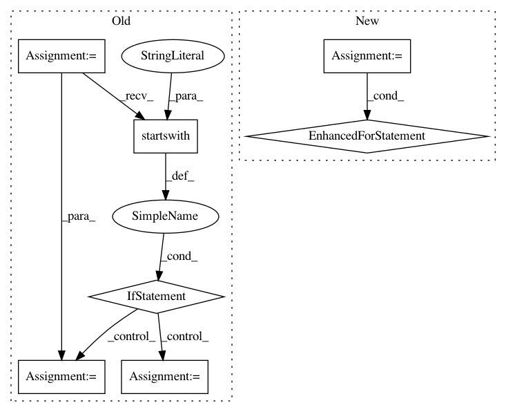

f25d9afd2572b98c56c3f597ad8da2648cd7b663,stanza/utils/training/common.py,,main,#Any#Any#Any#,21
Before Change
def main(run_treebank, model_dir, model_name):
paths = default_paths.get_default_paths()
args = sys.argv[1:]
if args[0].startswith("--"):
mode = Mode[args[0][2:].upper()]
args = args[1:]
else:
mode = Mode.TRAIN
treebank = args[0]
extra_args = args[1:]
if treebank.lower() in ("ud_all", "all_ud"):
After Change
mode = command_args.mode
treebanks = []
for treebank in command_args.treebanks:
if treebank.lower() in ("ud_all", "all_ud"):
ud_treebank = common.get_ud_treebanks(paths["UDBASE"])
for t in ud_treebank:
short_name = treebank_to_short_name(t)
model_path = "saved_models/%s/%s_%s.pt" % (model_dir, short_name, model_name)
logger.debug("Looking for %s" % model_path)
if mode == Mode.TRAIN and os.path.exists(model_path):
logger.info("%s: %s exists, skipping!" % (t, model_path))
else:
treebanks.append(t)
else:
treebanks.append(treebank)
for treebank in treebanks:
short_name = treebank_to_short_name(treebank)
logger.debug("%s: %s" % (treebank, short_name))
run_treebank(mode, paths, treebank, short_name, command_args, extra_args)
In pattern: SUPERPATTERN
Frequency: 3
Non-data size: 7
Instances
Project Name: stanfordnlp/stanza
Commit Name: f25d9afd2572b98c56c3f597ad8da2648cd7b663
Time: 2020-12-01
Author: horatio@gmail.com
File Name: stanza/utils/training/common.py
Class Name:
Method Name: main
Project Name: CyberReboot/NetworkML
Commit Name: d3babe1252d05f07e58a6602b47e1a09bbd56af5
Time: 2019-12-10
Author: josh@vandervecken.com
File Name: networkml/parsers/pcap/reader.py
Class Name:
Method Name: packetizer
Project Name: aws/sagemaker-python-sdk
Commit Name: 3d091b43f5c817709299d6cdfb95d4b72b356ca4
Time: 2018-11-02
Author: nacho950@gmail.com
File Name: src/sagemaker/local/image.py
Class Name: _SageMakerContainer
Method Name: _prepare_serving_volumes